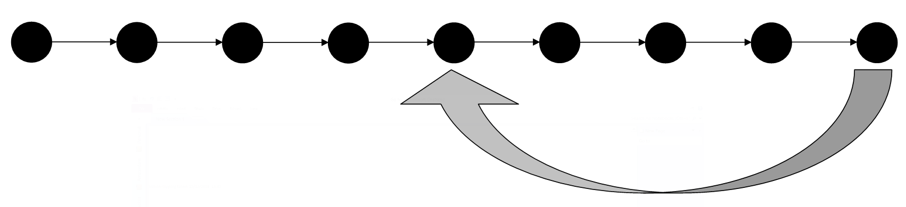
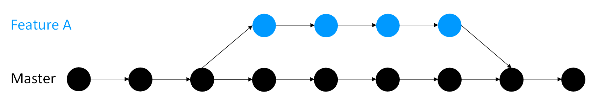
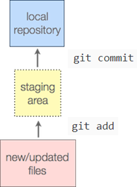

---
redirect_from:
  - "/version-control/version-control"
title: |-
  Version Control
pagenum: 14
prev_page:
  url: /open_research/07/resources.html
next_page:
  url: /licensing/licensing.html
suffix: .md
search: git changes version project commit files branch merge work control github branches repository add not code file com commits into versions also pull should master using made good working want new any features person via request license used past example such conflicts attribution practice different copy need push between online messages commons projects collaborators compare making create just only checkout diff include origin creative merging others issues run staging area message clone possible chapter great often why same directory b branchname hello world sharealike line entire available allows figures where solution back get computer doing once here problem switch log

comment: "***PROGRAMMATICALLY GENERATED, DO NOT EDIT. SEE ORIGINAL FILES IN /../content***"
---

    <main class="jupyter-page">
    <div id="page-info"><div id="page-title">Version Control</div>
</div>
    
<div class="jb_cell">

<div class="cell border-box-sizing text_cell rendered"><div class="inner_cell">
<div class="text_cell_render border-box-sizing rendered_html">
<h1 id="Version-Control">Version Control<a class="anchor-link" href="#Version-Control"> </a></h1><h2 id="Prerequisites-/-recommended-skill-level">Prerequisites / recommended skill level<a class="anchor-link" href="#Prerequisites-/-recommended-skill-level"> </a></h2><table>
<thead><tr>
<th>Prerequisite</th>
<th>Importance</th>
<th>Notes</th>
</tr>
</thead>
<tbody>
<tr>
<td><a href="https://programminghistorian.org/en/lessons/intro-to-bash">Experience with the command line</a></td>
<td>Helpful</td>
<td>It is possible to use version control through desktop and web browser based tools. These are discussed towards the end of this chapter, but the general principles and best practice discussed in the preceding sections are relevant regardless of whether the command line or a GUI is used.</td>
</tr>
</tbody>
</table>
<p>Recommended skill level: beginner - intermediate. Version control has a great deal of useful features, but total mastery is not necessary to achieve a great deal with it.
Even a beginner utilising a few of the simplest features well can save themselves a great deal of time and drastically improve the reproducibility of their work.
Naturally, we encourage readers to make use of the entire chapter, but readers should not be discouraged from using some tools they feel comfortable with if they are not comfortable with <em>all</em> the tools available.</p>
<h2 id="Summary">Summary<a class="anchor-link" href="#Summary"> </a></h2><p>Version control keeps track of different versions of a project and allows past versions to be accessed easily.
It also allows different versions of a project to be merged with minimal input from the user.
Version control is often associated with writing code, but it can also be used with writing projects.
For example, if you are writing a paper with collaborators then version control is really important in helping you to see who has changed what.
Version control is used to some extent within many different programs, including ones you are likely to already be familiar with such as Word or Wordpress.
There are numerous tools available for version control such as <a href="https://www.mercurial-scm.org/">Mercurial</a> and <a href="https://subversion.apache.org/">SVN</a>.
The best know one is Git (and its web-based version, <a href="https://github.com/">GitHub</a>, which aids collaboration between researchers) which the instructions given in this chapter will be geared towards.
There are a large number of detailed tutorials available online discussing the features and mechanics of how to use such systems (see the "<a href="#further-reading">Further reading</a>" section at the end of the chapter).
This chapter aims to cover the general principles underpinning all version control systems, and best practice which applies for using all such systems.</p>
<h2 id="How-version-control-is-helpful">How version control is helpful<a class="anchor-link" href="#How-version-control-is-helpful"> </a></h2><p>Researchers often have a large array of files (code, data, figures, notes) that they update but that they want to keep past versions of for reference.
This process is often informal and haphazard, where multiple revisions of papers, code, and datasets are saved as duplicate copies with uninformative file names (for example, my_code.py my_code_2.py my_code_2a.py, my_code_2b.py).
As authors receive new data and feedback from peers and collaborators, maintaining those versions and merging changes can result in an unmanageable proliferation of files.
It is also incredibly error prone.
It is easy to forget what different files contain, or to copy over files you do not mean to.
This leads to a great deal of time wasted on figuring out what files contain and reproducing accidently overwritten files.</p>
<p>One solution to these problems would be to use a formal Version Control System (VCS).
A formal version is often a better solution than the lightweight version control that is often provided by text editing software packages.
These systems have long been used in the software industry to manage code.
Version control allows you to revert files you select back to a previous state, revert the entire project back to a previous state, compare changes over time, see who last modified a file, find where and when a bug was introduced, and more. Using a version control system also generally means that if you screw things up or lose files, you can easily recover.
In addition, you get all of this for very little overhead.
Many people have felt the horror of losing days if not weeks of work when changes to a code break it irretrievably and can not be unpicked, and with this lies the key reasons to use version control: <strong>it removes risk and saves time.</strong></p>
<p>Keeping past versions of a project stored and accessible makes it possible to track its entire evolution, making the outputs far more reproducible.
Version control software does this in a neat and powerful way, and it often saves researchers a great deal of time on reproducing lost code or analysis.
Further, version control gives researchers more freedom to try things out and experiment.
It does this by eliminating the risk of subsequent changes irrevocably 'breaking' the code as previous working versions will remain accessible regardless of how complex or how many changes are made.</p>
<p>Another benefit of version control is that it makes collaboration easier, safer, and allows what changes have been made, when, why, and by who to be tracked.
It does this by allowing different versions of a project (either two versions written by the same person, or versions from many people) to be worked on separately.
It also has facilities to automatically compare and combine versions of a project, tasks which are often both fiddly and time-consuming when done manually.</p>
<h2 id="Version-control:-What-it-is-and-how-it-can-be-used-to-manage-an-evolving-project">Version control: What it is and how it can be used to manage an evolving project<a class="anchor-link" href="#Version-control:-What-it-is-and-how-it-can-be-used-to-manage-an-evolving-project"> </a></h2><h3 id="What-it-is">What it is<a class="anchor-link" href="#What-it-is"> </a></h3><p>What is "version control" and why should you care? Version control is a system that records changes to a file or set of files over time so that you can recall specific versions later.
It is typically applied to managing changes in code, though in reality you can do this with nearly any type of file on a computer.</p>
<h3 id="The-basic-workflow">The basic workflow<a class="anchor-link" href="#The-basic-workflow"> </a></h3><p>The typical procedure for using version control is as follows:</p>
<ol>
<li>Create some files - these may be text or code.</li>
<li>Work on these files, changing, deleting or adding new content.</li>
<li>Create a snapshot of the work at this time.
This will be described differently in different software.
Git will ask you to make a commit, other systems make ask you to make a timepoint or checkpoint or just to save your work.</li>
</ol>
<p>Keep doing work and making more and more snapshots.
You can think of these as savepoints - if you need to go back to any point in time because of a mistake, or changing your mind about a decision, you can go back to get a file as it was then, or just return your entire project to a past state.
An illustration of this is shown in the figure below.</p>
<p></p>
<p>In lots of version control systems you will be able to add a comment explaining what changes have been made in this version.
These comments should be as clear as possible and make it easy to understand which version is which.
This ensures that it is easy to find what you are looking for when you need to go back to a past version.
Your collaborators will thank you, but so will future versions of yourself.</p>
<h3 id="Other-facilities-offered-by-version-control">Other facilities offered by version control<a class="anchor-link" href="#Other-facilities-offered-by-version-control"> </a></h3><p>So you have your project and you want to add something new or try something out.
With some of the more advanced version control systems (for example Git) you can make a branch to do this work on.
Any work you do on your branch will not be present on your main project (referred to as your master branch) so it remains nice and safe and you can continue to work on it.
Once you are happy with your New Thing you can 'merge' your branch back into your master copy.</p>
<p></p>
<p>You can have more than one branch off of your master copy, and if one of your branches ends up not working you can either abandon it or delete it without the master branch of your project ever being impacted.</p>
<p></p>
<p>If you want you can even have branches off of branches (and branches off of those branches and so on).</p>
<p></p>
<p>No matter how many branches you have you can access past savepoints you made on any of them.</p>
<h2 id="Why-should-you-use-version-control?">Why should you use version control?<a class="anchor-link" href="#Why-should-you-use-version-control?"> </a></h2><p>Version control can help you understand what changes you made in the past or why you did a certain analysis in the way you did it even weeks or months later when you have long since forgotten.
By including comments and commit messages, each version can explain what changes it makes and what the version of the project it contains does.
Commit messages also help others working on the same project to more easily understand what you did.
This is helpful should you want to share your analysis (not only your data), and/or make it auditable -- more generally, <strong>reproducible</strong>, which is good scientific practice.</p>
<p>A version control system stores all your changes neatly away so while it is still easy to access them your working directory is not cluttered by the debris of versions past that it is necessary to keep just in case.
Similarly with version control there is no need to leave chunks of code commented should you ever need to come back to an old version again.</p>
<p>Finally version control is invaluable for collaborative projects where different people work on the same code simultaneously.
It allows the changes made by different people to be tracked, and can automatically combine people's work via merging saving a great deal of painstaking effort to do so manually.
Moreover, version control hosting websites, such as GitHub, provide way to communicate in a more structured way, such as in code reviews, about commits and about issues.</p>
<h2 id="Getting-Started">Getting Started<a class="anchor-link" href="#Getting-Started"> </a></h2><p>This is important to know, but it is not that exciting.
Instructions for installing Git on linux, windows and mac machines are available <a href="https://Git-scm.com/book/en/v2/Getting-Started-Installing-Git">here</a>.
Once installation is complete, to start using version control for your project you just go into the directory that contains all of your files (subdirectories will be included) and run:</p>

<pre><code>git init</code></pre>
<p>in the terminal to create the Git repository (often called "repo" for short).
This only needs to be done once per project.</p>
<p>Think of the repository as a place where the history is being stored.
Each file in your working directory can be in one of two states: tracked or untracked by your repository.
In short, tracked files are files that Git knows about.
Untracked files are everything else — any files in your working directory that were not in your last snapshot.
When you first initialise a repository with <code>git init</code> all of your files will be untracked because your repository it does not <em>have</em> a previous snapshot yet, so it doesn't know about any of your files.
Therefore your next step is to add your files to the repository using:</p>

<pre><code>git add .</code></pre>
<p>This puts your changes into what is called the "staging area".
When you next commit any changes stored in your staging area will be recorded in your repository.</p>
<p></p>
<p>The full stop after <code>git add</code> above adds all changes to your staging area. So now all your files are staged commit them using:</p>

<pre><code>git commit</code></pre>
<p>We will talk in more detail about these commands <a href="#commits">later</a>, but for now just know if you run them then congratulations, you have finished setting up you repository!</p>
<h2 id="Commits">Commits<a class="anchor-link" href="#Commits"> </a></h2><h3 id="The-problem">The problem<a class="anchor-link" href="#The-problem"> </a></h3><p>When working on a project you will make numerous changes to your files as you progress. Sometimes you may need to undo changes, take another look at past versions, or compare versions.
Saving each version individually (such as <code>version_1.py</code> and <code>version_2.py</code>) is messy and quickly becomes impractical.</p>
<h3 id="The-solution">The solution<a class="anchor-link" href="#The-solution"> </a></h3><p>By making commits you can save versions of your code and switch between them/compare them easily without cluttering up your directory.
Commits serve as checkpoints where individual files or an entire project can be safely reverted to when necessary.</p>
<h3 id="How-to-do-it">How to do it<a class="anchor-link" href="#How-to-do-it"> </a></h3><p>When you have made a series of changes and you want to commit them you first add these changes to your staging area using <code>git add</code>.
You can add all your changes using:</p>

<pre><code>git add .</code></pre>
<p>or you can add the changes to specific files via:</p>

<pre><code>git add your_file_name</code></pre>
<p>If you are ever unsure what files have been added, what files have been changed, what files are untracked, you can run the following to find out:</p>

<pre><code>git status</code></pre>
<p>When you're ready you can commit everything in your staging area by running</p>

<pre><code>git commit</code></pre>
<p>It's that easy.</p>
<p>You can see a log of your previous commits using</p>

<pre><code>git log</code></pre>
<p>In this log you'll see that each commit is automatically tagged with a unique string of numbers and letters called a SHA which you can use to access and compare them.</p>
<h4 id="Retrieving-past-versions">Retrieving past versions<a class="anchor-link" href="#Retrieving-past-versions"> </a></h4><p>To cancel your latest commit run</p>

<pre><code>git revert HEAD</code></pre>
<p>which automatically makes a new commit that undoes those changes. You may want to retrieve a version form weeks or months ago. To do this first use <code>git log</code> to find the SHA of the version you want to retrieve. To reset your entire project to this version do</p>

<pre><code>git checkout SHA_of_the_version</code></pre>
<p>You may just want the old version of a single file though, and not the previous version of the whole project. To retrieve this use</p>

<pre><code> git checkout SHA_of_the_version -- your_file_name</code></pre>
<h3 id="Good-practice">Good practice<a class="anchor-link" href="#Good-practice"> </a></h3><p>Commits should be 'atomic'. That is, <strong>they should do one simple thing and they should do it completely</strong>. For example, adding a new function or renaming a variable. If a lot of different changes to your project are all committed together then if something goes wrong it can be hard to unpick what in this set of changes if causing the problem, and undoing the whole commit may throw away valid and useful work along with the bug. That said <strong>you do not necessarily need to do per-file commits</strong>. For example if I add a figure to this chapter here, let's choose something to catch the attention of someone skimming through:</p>
<p></p>
<p>then when I do this two files are changed:</p>
<ol>
<li>The figure file has been added.</li>
<li>I have added a reference to this figure in the chapter so it will be displayed.</li>
</ol>
<p>So two files are affected, but "Add figure to version control chapter" is a single, <em>atomic</em> unit of work, so only one commit is necessary.</p>
<p>To aid in making atomic commits it is good practice to <strong>specify the files to be committed</strong>, that is, adding files to the staging area by name (<code>git add your_file_name</code>) rather than adding everything (<code>git add .</code>). This prevents you from unintentionally bundling different changes together, for example if you have made a change to file A while primarily working on file B you may have forgotten this when you go to commit, and with <code>git add .</code> file A would be brought along for the ride.</p>
<p>Finally, <strong>do not commit anything that can be regenerated from other things that were committed unless it is something that would take hours to regenerate</strong>. Generated files just clutter up your repository and may contain features such as timestamps that can cause annoying merge conflicts (see <a href="#merge-conflicts">below</a>). On a similar note you should not commit configuration files, specifically configuration files that might change from environment to environment. You can instruct Git to ignore certain files by creating a file called <code>.Gitignore</code> and including their names in it.</p>
<h2 id="Commit-messages">Commit messages<a class="anchor-link" href="#Commit-messages"> </a></h2><h3 id="The-problem">The problem<a class="anchor-link" href="#The-problem"> </a></h3><p>As you work on you project you will make more and more commits.
Without any other information it can be hard to remember which version of your project is in which.
Storing past versions is useless if you can not understand them, and figuring out what they contain by inspecting the code is frustrating and takes valuable time.</p>
<h3 id="The-solution">The solution<a class="anchor-link" href="#The-solution"> </a></h3><p>When you commit you have the chance to write a commit message describing what the commit is and what it does, and you should always, <em>always,</em> <strong><em>always</em></strong> do so.
A commit message gets attached to the commit so if you look back at it (for example, via <code>git log</code>) it will show up.
Creating insightful and descriptive commit messages is one of the best things you can do to get the most out of version control.
It lets people (and your future self when you have long since forgotten what you were doing and why) quickly understand what changes a commit contains without having to carefully read code and waste time figuring it out.
Good commit messages improve your code quality by drastically reducing its WTF/min ratio:</p>
<p></p>
<h3 id="How-to-do-it">How to do it<a class="anchor-link" href="#How-to-do-it"> </a></h3><p>When you commit via:</p>

<pre><code>git commit</code></pre>
<p>notice that a field appears (either within the terminal or in a text editor) where a commit message can be written. Simply do so and save (and close if writing the message via text editor).
To set your preferred editor as the default do:</p>

<pre><code>git config --global core.editor "your_preferred_editor"</code></pre>
<h3 id="Good-practice">Good practice<a class="anchor-link" href="#Good-practice"> </a></h3><p>The number one rule is: <strong>make it meaningful</strong>.
A commit message like "Fixed a bug" leaves it entirely up to the person looking at the commit (again, this person may very well be you a few months in the future when you have forgotten what you were doing) to waste time figuring out what the bug was, what changes you actually made, and how they fixed it.
As such a good commit message should <strong>explain what you did, why you did it, and what is impacted by the change</strong>.
As with comments you should <strong>describe what the code is doing rather than the code itself</strong>. For example, it is not obvious what "Change N_sim to 10" actually does, but "Change number of simulations run by the program to 10" is clear.</p>
<p><strong>Summarise the change</strong> the commit contains in the first line (50-72 characters), then leave a blank line before you continue with the body of the message. By doing this when shortened versions of <code>git log</code> are used just the summary will appear. This makes it much easier to quickly search through a large number of commits.
It is also a good practice to <strong>use the imperative present tense</strong> in these messages. In other words, use commands.
Instead of "I added tests for" or "Adding tests for", use "Add tests for".</p>
<p>Here is a good example of commit message structure:</p>

<pre><code>Short (50 chars or less) summary of changes

More detailed explanatory text, if necessary. Wrap it to
about 72 characters or so. In some contexts, the first
line is treated as the subject of an email and the rest of
the text as the body. The blank line separating the
summary from the body is critical (unless you omit the body
entirely); tools like rebase can get confused if you run
the two together.

Further paragraphs come after blank lines.

  - Bullet points are okay, too

  - Typically a hyphen or asterisk is used for the bullet,
    preceded by a single space, with blank lines in
    between, but conventions vary here</code></pre>
<h2 id="Comparing-versions">Comparing versions<a class="anchor-link" href="#Comparing-versions"> </a></h2><h3 id="The-problem">The problem<a class="anchor-link" href="#The-problem"> </a></h3><p>At some point it is likely you will need/want to compare versions of a project, for example to see what version was used to generate a certain result.</p>
<h3 id="The-solution">The solution<a class="anchor-link" href="#The-solution"> </a></h3><p>In short: <code>git diff</code>.</p>
<p>Diffing is a function that takes two input data sets and outputs the changes between them.
<code>git diff</code> is a multi-use Git command that when executed runs a diff function on Git data sources.
These data sources can be commits, branches, files and more.</p>
<h3 id="How-to-do-it">How to do it<a class="anchor-link" href="#How-to-do-it"> </a></h3><p>By default <code>git diff</code> will show you any uncommitted changes since the last commit.
If you want to compare two specific things the syntax is:</p>

<pre><code>git diff thing_a thing_b</code></pre>
<p>For example if you want to compare how a file has changed between two commits use <code>git log</code> to get the SHAs of those commits and run:</p>

<pre><code>git diff SHA_a:your_file_name SHA_b:your_file_name</code></pre>
<p>Or if you wanted to compare two branches it would be:</p>

<pre><code>git diff branch_name other_branch_name</code></pre>
<h3 id="Good-practice">Good practice<a class="anchor-link" href="#Good-practice"> </a></h3><p><strong>Use it</strong>.
With a little familiarity <code>git diff</code> becomes an extremely powerful tool you can use to track what files have changed and exactly what those changes are.
This is extremely valuable for unpicking bugs and comparing work done by different people.
Be careful to <strong>understand what exactly is being compared</strong> and where possible <strong>only compare the relevant files</strong> for what you are interested in to avoid large amounts of extraneous information.</p>
<h2 id="Branches">Branches<a class="anchor-link" href="#Branches"> </a></h2><h3 id="The-problem">The problem<a class="anchor-link" href="#The-problem"> </a></h3><p>If you add a new feature to your project you run the risk of accidentally breaking your working code as you make changes to it.
This would be very bad for active users of your project, even if the only active user is you.
Also version control systems are regularly used for collaboration.
If everyone starts programming on top of the master branch, it will cause a lot of confusion.
Some people may write faulty/buggy code or simply the kind of code/feature others may not want in the project.
There needs to be a way allow new work to be done on a project whilst protecting work that has already been done.</p>
<h3 id="The-solution">The solution<a class="anchor-link" href="#The-solution"> </a></h3><p>Branches.
At the start of this chapter an <a href="#other-facilities-offered-by-version-control">overview</a> was given of the concept of branches, but let's recap.
You have a project, and you make commits on it.
By default you have one branch, called 'master'.
Making a branch essentially makes a copy of your code which you can work on and continue to make commits to.
Meanwhile your master branch is untouched by these changes, and you can continue to make commits on it too.
Once you are happy with whatever you were working on on a branch you can merge it into your master branch (or indeed any other branch).
Merging will be covered in the <a href="#merging">next section</a>.
If your work on a branch does not work out you can delete or abandon it (for example, Feature B in the diagram below) rather than spending time unpicking your changes if you were doing all your work on the master copy.
You can have as many branches off of branches as you desire (for example, Feature A-1).</p>
<p>Using branches keeps working code safe, particularly in collaborations.
Each contibuter can have their own branch or branches which are only merged into the main project when they are ready.</p>
<p></p>
<h3 id="How-to-do-it">How to do it<a class="anchor-link" href="#How-to-do-it"> </a></h3><p>You can create a branch and switch to it using:</p>

<pre><code>git checkout -b name_of_your_new_branch</code></pre>
<p>To change between branches:</p>

<pre><code>git checkout name_of_the_branch</code></pre>
<p>though you must commit any work you have in progress before you will be able to switch. You can see all branches of your project simply using:</p>

<pre><code>git branch</code></pre>
<p>which will output a list with an asterix next to the branch you are on.
You can also use <code>git status</code> if you have forgotten which branch you are on.</p>
<p>If you decide to get rid of a branch you can delete it with:</p>

<pre><code>git branch -D name_of_the_branch</code></pre>
<h3 id="Good-practice">Good practice<a class="anchor-link" href="#Good-practice"> </a></h3><p>Branches should be used to <strong>keep the master branch clean</strong>.
That is, master should only contain work which is complete and tested and so rightfully belongs in the master version of the project.
Similarly you should try to keep individual branches as clean as possible by <strong>only adding one new feature per branch</strong>, because if you are working on several features some may be finished and ready to merge into master while others are still under development.
Keeping your branches clean means only making changes related to the feature on the feature's branch.
Give your branches <strong>sensible names</strong>, "new_feature" is all well and good until you start developing a newer feature on another branch.</p>
<h2 id="Merging">Merging<a class="anchor-link" href="#Merging"> </a></h2><h3 id="The-problem">The problem<a class="anchor-link" href="#The-problem"> </a></h3><p>Once you've finished up some work on a branch you need to integrate it to your main project (or any other branch).</p>
<h3 id="The-solution">The solution<a class="anchor-link" href="#The-solution"> </a></h3><p>Merge the branch with your work on into your target branch.
You can also use merging to combine work that other people have done with your own and vice versa.</p>
<h3 id="How-to-do-it">How to do it<a class="anchor-link" href="#How-to-do-it"> </a></h3><p>To merge some branch, branch_A, into another branch, branch_B, switch to branch_A via <code>git checkout branch_A</code> and merge it into branch_B by:</p>

<pre><code>git merge branch_B</code></pre>
<p>Merging will not be possible if there are changes in either your working directory or staging area that could be written over by the files that you are merging in.
If this happens, there are no merge conflicts in individual files.
You need to commit or stash the files it lists and then try again.
The error messages are as follows:</p>

<pre><code>error: Entry 'your_file_name' not uptodate. Cannot merge. (Changes in working directory)</code></pre>
<p>or</p>

<pre><code>error: Entry 'your_file_name' would be overwritten by merge. Cannot merge. (Changes in staging area)</code></pre>
<h3 id="Good-practice">Good practice<a class="anchor-link" href="#Good-practice"> </a></h3><p>First and foremost your <strong>master branch should always be stable</strong>, only merge work that is finished and tested into it.
If your project is collaborative then it is a good idea to <strong>merge changes that others make into you own work frequently</strong>.
If you do not it is very easy for merge conflicts to arise (next section).
Similarly, share your own changes with your collaborators often.</p>
<h2 id="Merge-conflicts">Merge conflicts<a class="anchor-link" href="#Merge-conflicts"> </a></h2><h3 id="The-problem">The problem<a class="anchor-link" href="#The-problem"> </a></h3><p>When changes to made to the same file on different branches sometimes those changes may be incompatible.
This most commonly occurs in collaborative projects, but it happens in solo projects too.
Let's say there's a project and it contains a file with this line of code:</p>

<pre><code>print('hello world')</code></pre>
<p>Lets say one person, on their branch, decides to pep it up a bit and changes this line to:</p>

<pre><code>print('hello world!!!')</code></pre>
<p>while someone else on another branch instead decides to change <code>print('hello world')</code> to:</p>

<pre><code>print('Hello World')</code></pre>
<p>They continue doing work on their respective branches and eventually decide to merge.
Their version control software then goes through and combines their changes into a single version of the file, <em>but</em> when it gets to the hello world statement it doesn't know which version to use.
This is a merge conflict: incompatible changes have been made to the same file.</p>
<h3 id="The-solution">The solution<a class="anchor-link" href="#The-solution"> </a></h3><p>When a merge conflict arises it will be flagged during the merge process.
Within the files with conflicts the incompatible changes will be marked so you can fix them:</p>

<pre><code>&lt;&lt;&lt;&lt;&lt;&lt;&lt; HEAD
print('hello world!!!')
=======
print('Hello World')
&gt;&gt;&gt;&gt;&gt;&gt;&gt; master</code></pre>
<p><code>&lt;&lt;&lt;&lt;&lt;&lt;&lt;</code>: Indicates the start of the lines that had a merge conflict.
The first set of lines are the lines from the file that you were trying to merge the changes into.</p>
<p><code>=======</code>: Indicates the break point used for comparison.
Breaks up changes that user has committed (above) to changes coming from merge (below) to visually see the differences.</p>
<p><code>&gt;&gt;&gt;&gt;&gt;&gt;&gt;</code>: Indicates the end of the lines that had a merge conflict.</p>
<h3 id="How-to-do-it">How to do it<a class="anchor-link" href="#How-to-do-it"> </a></h3><p>You resolve a conflict by editing the file to manually merge the parts of the file that Git had trouble merging.
This may mean discarding either your changes or someone else's or doing a mix of the two.
You will also need to delete the <code>&lt;&lt;&lt;&lt;&lt;&lt;&lt;</code>, <code>=======</code>, and <code>&gt;&gt;&gt;&gt;&gt;&gt;&gt;</code> in the file.
So in this project the users may decide in favour of one <code>hello world</code> over another, or they may decide to replace the conflict with:</p>

<pre><code>print('Hello World!!!')</code></pre>
<p>Once you have fixed the conflicts commit the new version.
You have now resolved the conflict.
If, during the process, you need a reminder of which files the conflicts are in you can use <code>git status</code> to find out.</p>
<p>If you find there are particularly nasty conflicts and you want to abort the merge you can using:</p>

<pre><code>git merge --abort</code></pre>
<h3 id="Good-practice">Good practice<a class="anchor-link" href="#Good-practice"> </a></h3><p>Before you start trying to resolve conflicts <strong>make sure you fully understand the changes and how they are incompatible</strong>. If you do not you risk making things more tangled.
Once you do and you go about fixing the problem <strong>be careful, but do not be afraid</strong>; the whole point of version control is your past versions are all safe.
Nevertheless merge conflicts can be intimidating to resolve, especially if you are merging branches that diverged a great many commits ago which may now have many incompatibilities.
This is why it is good practice to <strong>merge other's changes into your work frequently</strong>.</p>
<p>There are <strong>tools</strong> available to assist in resolving merge conflicts, some are free, some are not.
Find and familiarise yourself with one that works for you.
Commonly used merge tools include <a href="http://kdiff3.sourceforge.net/">KDiff3</a>, <a href="https://www.scootersoftware.com/">Beyond Compare</a>, <a href="http://meldmerge.org/">Meld</a>, and <a href="https://www.perforce.com/products/helix-core-apps/merge-diff-tool-p4merge">P4Merge</a>.
To set a tool as your default do:</p>

<pre><code>git config --global merge.tool name_of_the_tool</code></pre>
<p>and launch it with:</p>

<pre><code>git mergetool</code></pre>
<p>Fundamentally the best way to deal with merge conflicts is to, so far as is possible, <strong>ensure they do not happen in the first place</strong>.
You can improve your odds on this by <strong>keeping branches clean and focused on a single issue, and involving as few files as possible</strong>.
Before merging make sure you know what's in both branches, and if you are not the only one that has worked on the branches then <strong>keep the lines of communication open</strong> so you are all aware of what the others are doing.</p>
<h2 id="GitHub">GitHub<a class="anchor-link" href="#GitHub"> </a></h2><h3 id="The-problem">The problem<a class="anchor-link" href="#The-problem"> </a></h3><p>When multiple people work on the same project (which is becoming more and more common as research becomes increasingly collaborative) it becomes difficult to keep track of what changes have been made and by who.
It is also often difficult and time-consuming to manually incorporate the different participant's work into a whole even if all of their changes are compatible.</p>
<h3 id="The-solution">The solution<a class="anchor-link" href="#The-solution"> </a></h3><p>Hosting the project on a distributed version control system such as GitHub.
Collaborators can then clone the project and work on the cloned copy making commits and new branches without impacting the original repository.
Collaborators can then <em>push</em> their work to each other, and <em>pull</em> other's work into their own copy.
In this way it is easy to keep everyone up to date and to track what has been done and by who.
GitHub also has numerous other handy features such as the ability to raise and assign issues, discuss the project via comments, and review each other's changes.</p>
<p>Making the entire project and its history available online in this was also has two major benefits for research:</p>
<ol>
<li>Other researchers can re-use the work more easily.
Rather than writing their own code to do what has already been written they can just use the original, which saves time.
This also benefits the project's original authors as other researchers are much more likely to build on the work (and cite it) if a great deal of the work has already been done.</li>
<li>The research will be much more reproducible if the entire history of the project can be tracked. This enables results to be verified more easily, which benefits science.</li>
</ol>
<h3 id="How-to-do-it">How to do it<a class="anchor-link" href="#How-to-do-it"> </a></h3><p>There are a number of GitHub tutorials available such as <a href="https://guides.GitHub.com/activities/hello-world/">this one</a>, or if you prefer you can follow along here.</p>
<p>First make an account on <a href="https://GitHub.com/">GitHub</a>, and create a repository on it.
To do this click the + sign dropdown menu in the upper right hand of the screen.
Enter a name for the repository (ideally the same name as the project folder on your computer) and click Create Repository.
Now you just need to link the project on your computer to this online repository.
If your project is not already version controlled then make it so by running <code>git init</code> and making a commit.
In the terminal on your computer use:</p>

<pre><code>git remote add origin https://GitHub.com/your_username/repository_name</code></pre>
<p>then <em>push</em> all the files on your computer to the online version so they match via:</p>

<pre><code>git push -u origin master</code></pre>
<p>You can the go on and make more commits on your computer.
When you want to push them to your online version similarly you do:</p>

<pre><code>git push origin branch_you_want_to_push_to</code></pre>
<p>Others can then clone the repository to their computer by using:</p>

<pre><code>git clone https://GitHub.com/your_username/repository_name.Git</code></pre>
<p>They can make and commit changes to the code without impacting the original, and push their changes to <em>their</em> online GitHub account using:</p>

<pre><code>git push -u origin master</code></pre>
<p>Naturally the exact same procedure applies to you if you want to clone someone else's repository.</p>
<h4 id="Pull-requests">Pull requests<a class="anchor-link" href="#Pull-requests"> </a></h4><p>So everyone's got a copy of the code and they're merrily working away on it, how do collaborators share their work?
Pull requests.
A pull request is a request for a person to <em>pull</em> someone else's changes into their version on the project.
Say person A has made changes they want to share with person B.
On GitHub Person A needs to go to person B's copy of the project and click the "New pull request" button.
From there they can indicate which of their branches they would like person B to pull changes from, and which branch they want the changes pulled to.
If person B accepts then person A's changes will be merged into their repository by GitHub.
They can discuss the request in comments, and make further commits to the request before it is accepted if necessary.</p>
<p>When person B is setting up the pull request GitHub will automatically check whether there would be any merge conflicts if they accept, and highlight them if there are.
These can then be resolved in further commits before the request is accepted, keeping the merge clean and painless.</p>
<p>Once the request is accepted GitHub will merge person A's changes into person B's online copy of the repository.
Person B can the <em>pull</em> those changes down to the copy on their computer using:</p>

<pre><code>git pull origin master</code></pre>
<p>It is also possible to make pull requests via the command line.
A guide on how to do so is available <a href="https://Git-scm.com/docs/Git-request-pull">here</a>.</p>
<h3 id="Good-practice">Good practice<a class="anchor-link" href="#Good-practice"> </a></h3><p>In your GitHub repository you should <strong>include a license</strong> to allow others to re-use your work legally.
GitHub makes this very easy, simply click the "Create new file" button, name it "License.md" and a drop down menu will appear offering you a selection to choose from. The legalese can seem intimidating however the <a href="/open_research/02/softwarelicenses">software licenses</a> section offers high level overview of the different license types.</p>
<p>You should also <strong>include a readme file</strong> where you include useful information about what the project is, how to use it and how to contribute to it.
Switching between projects in your work is common, let alone that you might need to poke at your own previous projects from time to time.
This information will also assist you collaborators, and your future employer might want to check your existing GitHub projects.</p>
<p>There are plenty of readme templates available online, pick one you like, but here is a list of the main things a readme should include:</p>
<ul>
<li>The project name and what it is: This will greatly help the random prospective contributor to get an idea of the project.
Include a few key points that describe the main features of the project and what are the main features you are implementing.
This helps to quickly compare other projects with yours and to give an idea that why the project exists in the first place.</li>
<li>Instructions on how to install the project: The installer might be a collaborator, someone that comes across and is interested in the project, or even you if you get a new machine and need to re-install your project.
Nevertheless, it's a total waste of both of your resources to start figuring out how to just get started with the project.
This should also include any prerequisites that will be needed to run the project.
The best thing you can do is to just write up the installation instructions when you first do them yourself, and you will quickly save hours of work in the future.</li>
<li>Instructions for how to run the project and any associated tests: If you have been working on your project it may seem obvious how to run it, but this will likely not be the case for someone coming across it for the first time.</li>
<li>Links to related material.</li>
<li>List of authors/contributors to the project, possibly with contact information.</li>
<li>Acknowledgements.</li>
</ul>
<p>It can be a good idea to <strong>include documents outlining a code of conduct, agreed ways of working, and contributing guidelines</strong>, though depending on the level of detail you want to provide the latter two can also work as sections within the readme.
These documents make explicit expectations for those working on/contributing to the project, making life easier for everyone.
Similarly depending on the scope of your project you may wish to <strong>provide templates for how contributors should make pull requests or raise issues</strong>.</p>
<p>You can also <strong>make use of one of GitHub's major features- issues</strong>.
Anyone can raise an issue with the project and discuss it.
By making issues for any significant changes a record can be kept of the history of the project.
GitHub has a myriad of other features such a milestones and project boards which may also be of use.</p>
<p>In pull requests you should <strong>clearly explain what the changes you've made are and why you made them</strong>.
If your changes address and issue that has been raised reference it directly.
If your request fixes and issue and you include "will fix #the_issue_number &gt;" in the pull request, if the pull request is merged it will automatically close the referenced issue, keeping the issue queue nice and clean!
This also works for using commit messages to close issues too.</p>
<h2 id="Summary-of-key-Git-commands">Summary of key Git commands<a class="anchor-link" href="#Summary-of-key-Git-commands"> </a></h2><table>
<thead><tr>
<th>Command</th>
<th>Use</th>
</tr>
</thead>
<tbody>
<tr>
<td>git init</td>
<td>Initialises a Git repository in that directory</td>
</tr>
<tr>
<td>git add .</td>
<td>Add all changes to the staging area to be committed</td>
</tr>
<tr>
<td>git add file_name</td>
<td>Add changes to the specified file to the staging area to be committed</td>
</tr>
<tr>
<td>git commit</td>
<td>Commits staged changes and allows you to write a commit message</td>
</tr>
<tr>
<td>git checkout SHA</td>
<td>Check out past commit with the given SHA</td>
</tr>
<tr>
<td>git checkout SHA -- file_name</td>
<td>Check out past version of a file from the commit with the given SHA</td>
</tr>
<tr>
<td>git checkout -b branch_name</td>
<td>Create and switch to a new branch</td>
</tr>
<tr>
<td>git checkout branch_name</td>
<td>Switch to a specified branch</td>
</tr>
<tr>
<td>git merge branch_name</td>
<td>Merge the branch you are on into the specified branch</td>
</tr>
<tr>
<td>git clone url</td>
<td>Makes a clone of the repository at the specified url</td>
</tr>
<tr>
<td>git remote add origin url</td>
<td>Links local repository and repository at the specified url</td>
</tr>
<tr>
<td>git push origin branch_name</td>
<td>Push local changes to the specified branch of the online repository</td>
</tr>
<tr>
<td>git pull origin branch_name</td>
<td>Pull changes to online repository into local repository</td>
</tr>
<tr>
<td>git log</td>
<td>Output a log of past commits with their commit messages</td>
</tr>
<tr>
<td>git status</td>
<td>Output status including what branch you're on &amp; what changes are staged</td>
</tr>
<tr>
<td>git diff</td>
<td>Output difference between working directory and most recent commit</td>
</tr>
<tr>
<td>git diff thing_a thing_b</td>
<td>Output difference between two things, such as commits and branches</td>
</tr>
</tbody>
</table>
<h2 id="Checklists">Checklists<a class="anchor-link" href="#Checklists"> </a></h2><h3 id="Make-use-of-Git">Make use of Git<a class="anchor-link" href="#Make-use-of-Git"> </a></h3><ul>
<li>[ ] Make your project version controlled by initialising a Git repository in its directory using <code>git init</code>.</li>
<li>[ ] Add and commit all your files to the repository using <code>git add .</code> then <code>git commit</code>.</li>
<li>[ ] Continue to add and commit changes as your project progresses. Stage the changes in specific files to be committed with <code>git add filename</code>, and add messages to your commits.<ul>
<li>[ ] Each commit should make one simple change.</li>
<li>[ ] No generated files committed.</li>
<li>[ ] Commit messages are meaningful, with a ~50 character summary at the top.</li>
<li>[ ] Commit messages are in the present tense and imperative.</li>
</ul>
</li>
<li>[ ] Develop new features on their own branches, which you can create via <code>git checkout -b branch_name</code> and switch between via <code>git checkout branch_name</code>.<ul>
<li>[ ] Branches have informative names.</li>
<li>[ ] Master branch is kept clean.</li>
<li>[ ] Each branch has a single purpose and only changes related to that purpose are made on it.</li>
</ul>
</li>
<li>[ ] Once features are complete merge their branches into the master branch by switching to the feature branch and running <code>git merge master</code>.<ul>
<li>[ ] Merge other's changes into your work frequently.</li>
<li>[ ] When dealing with merge conflicts make sure you fully understand both versions before trying to resolve them.</li>
</ul>
</li>
</ul>
<h3 id="Put-your-project-on-GitHub">Put your project on GitHub<a class="anchor-link" href="#Put-your-project-on-GitHub"> </a></h3><ul>
<li>[ ] Create a GitHub account.</li>
<li>[ ] Create a repository on GitHub with the same name as your project.</li>
<li>[ ] Attach your local and online repositories via <code>git remote add origin repository_url</code>.</li>
<li>[ ] Put the files in your local version of the project online via <code>git push -u origin master</code>.</li>
<li>[ ] Continue to push changes you make on your computer to the GitHub version via <code>git push origin branch_name</code>.</li>
<li>[ ] Pull any changes made on GitHub to your local version via <code>git pull origin branch_name</code>.</li>
<li>[ ] Include a license.</li>
<li>[ ] Include a readme.</li>
<li>[ ] Set expectations for how collaborators are expected to behave via a code of conduct and or ways of working document.</li>
<li>[ ] Use issues to track and discuss modifications to the project.</li>
</ul>
<h3 id="Contribute-to-someone-else's-project">Contribute to someone else's project<a class="anchor-link" href="#Contribute-to-someone-else's-project"> </a></h3><ul>
<li>[ ] Clone their project's repository from GitHub <code>git clone repository_url</code>.</li>
<li>[ ] Make and commit changes.</li>
<li>[ ] Push your changes to you GitHub version of the project.</li>
<li>[ ] Make use of issues to discuss possible changes to a project.</li>
<li>[ ] Make pull requests on GitHub to share your work.<ul>
<li>[ ] Clearly explain the changes you've made and why in your pull request.</li>
</ul>
</li>
</ul>
<h2 id="What-to-learn-next">What to learn next<a class="anchor-link" href="#What-to-learn-next"> </a></h2><p>Look into <a href="../code_quality/code_quality">best practice for writing good quality code</a> (for example, good naming conventions, informative comments, modular code structure).
Many such skills are either also applicable for using version control well, for example, for writing good commit messages, or make using version control easier by keeping changes neat and localised.</p>
<h2 id="Further-reading">Further reading<a class="anchor-link" href="#Further-reading"> </a></h2><ul>
<li>A free and very in depth book on Git's myriad of features can be found <a href="https://Git-scm.com/book/en/v2">here</a>.</li>
<li>A useful Git cheat sheet can be found <a href="https://education.github.com/git-cheat-sheet-education.pdf">here</a>.</li>
<li>Interactive tutorials for familiarising yourself with GitHub can be found at <a href="https://lab.github.com/">https://lab.github.com/</a>.</li>
</ul>
<h2 id="Definitions/glossary">Definitions/glossary<a class="anchor-link" href="#Definitions/glossary"> </a></h2><ul>
<li><strong>Add:</strong> Command used to add files to the staging area. Allows the user to specify which files or directories to include in the next commit.</li>
<li><strong>Branch:</strong> A parallel version of a repository. Although it is contained within the same repository it allows you to develop it separately and then merge changes back into the 'live' repository or with other branches when appropriate.</li>
<li><strong>Checkout:</strong> Git command to switch to a specific file, branch, or commit. Allows you to activate older versions of files or commits or switch between active branches.</li>
<li><strong>Clone:</strong> Copy of an existing Git repository, normally from some remote location to your local environment. When you clone a repo you copy its entire history as well as all branches.</li>
<li><strong>Commit:</strong> Snapshot of project history. A commit can be made after changes of a single file or a range of files and directories.</li>
<li><strong>Commit message:</strong> A message the user can attach to a commit to explain what it contains.</li>
<li><strong>Git:</strong> Version control system that GitHub is built around. It is a widely used open source distributed version control system developed by the author of Linux.</li>
<li><strong>GitHub:</strong> An online hosting and version control service which centres around the version control software Git. It has a great many features to aid collaboration between users.</li>
<li><strong>HEAD:</strong> the latest commit on the branch which is currently checked out</li>
<li><strong>Issues:</strong> Bug tracking system for GitHub. Collaborators can use issues to report bugs, request features, or set milestones for projects. Issues are tracked, reported, and closed by collaborators during the development process. They’re a great way of communicating with your team and reporting progress.</li>
<li><strong>Master:</strong> the repository’s main branch. Depending on the work flow it is the one people work on or the one where the integration happens.</li>
<li><strong>Merge:</strong> The process of combining branches. Changes made on one or more branches are applied to another.</li>
<li><strong>Merge conflict:</strong> Incompatibilities between branches being merged.</li>
<li><strong>Pull request:</strong> Proposed changes to a remote repository. Collaborators without write access can send a pull request to the administrator with the changes they've made to the repo. The administrator can then approve and merge or reject the changes to the main repository. For open source projects pull requests can be sent by anyone that has forked a project.</li>
<li><strong>Push:</strong> Sending changes to a remote repo. The remote repository is updated with the changes pushed and now mirrors the local repo.</li>
<li><strong>Repository:</strong> Refers to a project folder that is being tracked by Git and containing project files. Also called 'repo' for short they can be local as well as hosted on GitHub.</li>
<li><strong>SHA:</strong> Unique string of numbers of letters used to identify every commit or node in the repository.</li>
<li><strong>Staged:</strong> Changes that will be included in the next commit.</li>
</ul>
<h2 id="Bibliography">Bibliography<a class="anchor-link" href="#Bibliography"> </a></h2><ul>
<li><a href="https://git-scm.com/book/en/v2/Getting-Started-About-Version-Controls">1.</a> <strong>Creative Commons Attribution-NonCommercial-ShareAlike 3.0 Unported License</strong></li>
<li><a href="https://link.springer.com/article/10.1186/1751-0473-8-7">2.</a> <strong>Creative Commons Attribution License (<a href="http://creativecommons.org/licenses/by/2.0">http://creativecommons.org/licenses/by/2.0</a>)</strong> <em>Other useful stuff in this paper, could use their into as part of the book's intro</em></li>
<li><a href="http://crlionline.net/node/198">3.</a> <strong>Permission to use given by the author (Peter Reimann) 15/12/18</strong></li>
<li><a href="https://tonysyu.github.io/source-control-for-scientists-and-soloists.html#.XA6Q3mj7RPY">4.</a> <strong>Permission given by the author (Tony Yu) 15/12/18</strong></li>
<li><a href="https://git-scm.com/book/en/v2/Git-Basics-Getting-a-Git-Repository#ch02-git-basics-chapter">5.</a> <strong>Creative Commons Attribution-NonCommercial-ShareAlike 3.0 Unported License.</strong></li>
<li><a href="https://githowto.com/undoing_committed_changes">6.</a> <strong>creative commons Attribution-NonCommercial-ShareAlike 4.0 International</strong></li>
<li><a href="https://www.atlassian.com/git/tutorials/saving-changes/git-diff">7.</a> <strong>Creative Commons Attribution 2.5 Australia License.</strong></li>
<li><a href="http://sethrobertson.github.io/GitBestPractices/">8.</a> <strong>Creative Commons Attribution-ShareAlike 3.0 Generic</strong></li>
<li><a href="https://guide.esciencecenter.nl/best_practices/version_control.html">9.</a> <strong>Creative Commons Attribution 4.0 International License</strong></li>
<li><a href="https://git-scm.com/book/en/v2/Distributed-Git-Contributing-to-a-Project">10.</a> <strong>Creative Commons Attribution-NonCommercial-ShareAlike 3.0 Unported License</strong></li>
<li><a href="https://opensource.com/article/18/5/git-branching">11.</a> <strong>Creative Commons license</strong></li>
<li><a href="https://github.com/Kunena/Kunena-Forum/wiki/Create-a-new-branch-with-git-and-manage-branches">12.</a> <strong>GNU GENERAL PUBLIC LICENSE Version 3</strong></li>
<li><a href="http://genomewiki.ucsc.edu/index.php/Resolving_merge_conflicts_in_Git">13.</a> <strong><a href="http://genomewiki.ucsc.edu/index.php/Genomewiki:General_disclaimer">"You are granted a limited license to copy anything from this site"</a></strong></li>
<li><a href="https://githowto.com/resolving_conflicts">14.</a> <strong>creative commons Attribution-NonCommercial-ShareAlike 4.0 International</strong></li>
<li><a href="https://opensource.com/article/18/1/step-step-guide-git">15.</a> <strong>Attribution-ShareAlike 4.0 International (CC BY-SA 4.0)</strong></li>
<li><a href="https://kbroman.org/github_tutorial/pages/init.html">16.</a> <strong>Attribution 3.0 Unported (CC BY 3.0)</strong></li>
<li><a href="https://opensource.com/article/18/2/how-clone-modify-add-delete-git-files">17.</a> <strong>Attribution-ShareAlike 4.0 International (CC BY-SA 4.0)</strong></li>
<li><a href="https://thejunkland.com/blog/how-to-write-good-readme.html">18.</a> <strong>Creative Commons Attribution-NonCommercial 2.5 License</strong></li>
<li><a href="https://gist.github.com/PurpleBooth/109311bb0361f32d87a2">19.</a> <strong>MIT</strong></li>
<li><a href="https://commons.wikimedia.org/wiki/Taj_Mahal#/media/File:Taj_Mahal_in_March_2004.jpg">20.</a> <strong>GNU Free Documentation License</strong></li>
<li><a href="https://juristr.com/blog/2013/04/git-explained/">21.</a> <strong>Creative Commons Attribution-ShareAlike 4.0 International License</strong></li>
<li><a href="http://simpleprimate.com/github-for-web-designers/glossary.html">22.</a> <strong>Attribution-NonCommercial-ShareAlike 4.0 International (CC BY-NC-SA 4.0)</strong></li>
</ul>

</div>
</div>
</div>
</div>

 


    </main>
    